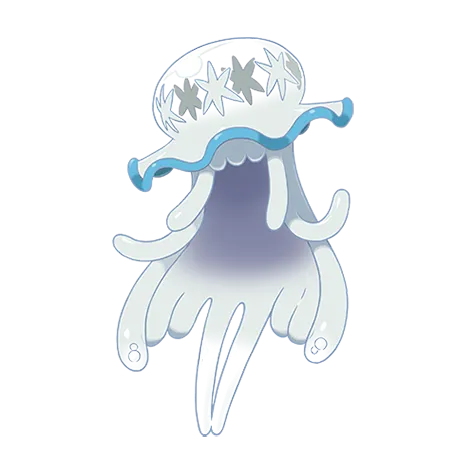
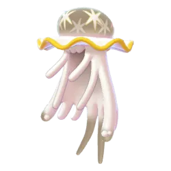

Raid Boss Overview – Nihilego
Nihilego can look intimidating at first, but this raid becomes much easier once you take advantage of its double weakness to Ground-type attacks. Strong Ground attackers like Groudon, Garchomp, Excadrill, or Landorus can melt through its HP surprisingly fast, even in smaller groups.
Why Nihilego Is Worth Raiding
Nihilego still has solid value for both collectors and raid-focused players.
- Its Rock typing makes it useful against Flying, Fire, Bug, and Ice raid bosses.
- It can also work as a Poison-type attacker when Fairy counters are needed.
- While it does not completely replace top Rock attackers, it remains a strong option for players building balanced raid teams.
- As an Ultra Beast, it is also important for Pokédex completion and limited-time events.
Players who missed previous Ultra Beast rotations usually prioritize Nihilego because it does not appear very often outside special events.
Raid Difficulty
Solo: Technically possible under ideal conditions, but not realistic for most players. You would need extremely high-level Ground counters, favorable weather, and almost no mistakes.
Duo: Difficult, but experienced trainers with powered-up Ground teams can pull it off consistently.
Trio: Usually the safest balance between speed and consistency. Most prepared groups should clear comfortably without much trouble.
4–6 Players: Easy raid. Even mixed teams with average counters should finish with plenty of time remaining.
7+ Players: At this point the raid becomes very relaxed, and coordination matters much less.
What Makes Nihilego Dangerous
- It deals heavy damage if your team lacks proper resistances.
- Its Rock- and Poison-type attacks can punish neutral attackers quickly.
- Some movesets feel noticeably stronger depending on weather conditions.
What Makes the Raid Easier
- Nihilego is much less bulky than many other Tier 5 bosses.
- Ground-type attacks deal massive double super-effective damage.
- Strong counters are widely available, especially for long-time players.
- Sunny weather boosts many of the best Ground attackers used in this raid.
Nihilego (Rock / Poison) – Moves Breakdown
Nihilego focuses almost entirely on damage output. It can hit surprisingly hard in raids and PvP, but its low bulk means it struggles to survive extended fights. Most players mainly use it as a specialized attacker rather than an all-purpose Pokémon.
Fast Moves
| Move | Type | Main Use | Notes |
|---|---|---|---|
| Poison Jab | Poison | PvP / PvE | Best fast move overall |
| Acid | Poison | Limited PvE use | Noticeably weaker than Poison Jab |
Fast Move Overview
Poison Jab is the clear winner here. It generates energy quickly, deals reliable damage, and fits both raid and PvP builds much better than Acid.
Acid technically works, but most trainers replace it immediately if possible.
Charged Moves
| Move | Type | Usage | Damage | Notes |
|---|---|---|---|---|
| Rock Slide | Rock | PvP / PvE | Medium | Reliable coverage move |
| Power Gem | Rock | Mostly PvE | Low | Generally outclassed |
| Sludge Wave | Poison | PvP / PvE | High | Main heavy-hitting STAB move |
| Acid Spray | Poison | Situational PvP | Low | Useful mainly for debuff pressure |
Recommended Charged Moves: Sludge Wave + Rock Slide
This combination gives Nihilego solid neutral coverage while still keeping strong Poison-type damage available.
Raid Boss Moves
When faced as a Tier 5 raid boss, Nihilego can pressure teams quickly if its moves line up well against your counters.
| Move | Type | Threat Level | Why It Matters |
|---|---|---|---|
| Acid | Poison | Low | Mainly chip damage |
| Poison Jab | Poison | Medium | Fast and consistent pressure |
| Rock Slide | Rock | High | Can punish Flying- and Fire-type counters |
| Power Gem | Rock | Medium | Steady neutral damage |
Most Dangerous Raid Move
Rock Slide is usually the moveset players want to avoid most.
- It charges fairly quickly.
- Flying- and Fire-type attackers take heavy damage from it.
- Glass cannon counters can faint much faster than expected.
Ground-types still handle this raid comfortably, but weaker teams may notice the extra pressure.
Dangerous Move Ranking
| Rank | Move | Why It Feels Dangerous |
|---|---|---|
| 1 | Rock Slide | Fast pressure against common counters |
| 2 | Sludge Wave | Heavy STAB burst damage |
| 3 | Poison Jab | Constant chip damage adds up quickly |
| 4 | Acid / Power Gem | Less threatening overall |
PvP Performance
Nihilego works best as an aggressive damage dealer rather than a bulky safe switch.
Recommended PvP Moveset:
- Fast Move: Poison Jab
- Charged Moves: Sludge Wave + Rock Slide
What It Does Well:
- Applies strong neutral pressure.
- Threatens Fairy-types heavily.
- Can force shields with Sludge Wave.
Main Problems:
- Very fragile compared to meta PvP tanks.
- Ground-, Steel-, and Psychic-types are major problems.
- Mistakes are punished quickly because of its low bulk.
PvE / Raid Attacker Usage
In raids, Nihilego is mostly used as a Poison attacker.
Best Raid Moveset:
- Poison Jab + Sludge Wave
Best Matchups:
- Fairy raid bosses
- Grass-type targets
- Some Fighting-type raids
Even though Nihilego performs well in certain situations, it is still more specialized than many top-tier raid attackers. Most players build it for specific matchups instead of using it everywhere.
Nihilego Performance Guide
Nihilego plays very differently depending on where you use it. In raids, it performs much better thanks to its huge Attack stat and strong typing combinations. In PvP, though, its low bulk becomes a serious problem against faster and tankier meta Pokémon.
PvE Performance (Raids & Gym Attacking)
This is where Nihilego performs best. Its high Attack stat allows it to deal impressive damage, especially against raid bosses weak to Rock- or Poison-type attacks.
Where Nihilego Works Well:
- Flying-type raid bosses
- Fire-type raids
- Bug-type targets
- Some Fairy-type matchups when using Poison attacks
Nihilego feels more like an aggressive damage dealer than a bulky long-term attacker. It can burn through raid bosses quickly, but it also faints faster than many top-tier legendary attackers.
Recommended Raid Movesets:
- Rock-focused: Poison Jab + Power Gem
- Poison-focused: Poison Jab + Sludge Bomb / Sludge Wave
Players mainly use Nihilego when they want fast Rock-type damage or a strong Poison attacker for specific raid rotations.
PvE Overall:
- Excellent offensive pressure
- Very strong Attack stat
- Low survivability compared to bulkier raid attackers
- Best used in matchups where it can deal damage quickly before fainting
Gym Battles
As a Gym Attacker:
Nihilego can clear weaker gyms quickly thanks to its damage output, but its low bulk makes extended fights uncomfortable. Most players prefer more durable attackers for regular gym clearing.
As a Gym Defender:
It struggles badly on defense.
- Low HP and Defense make it easy to remove.
- Common attacking types like Ground, Water, Steel, and Psychic all threaten it heavily.
- It usually cannot survive long enough to pressure experienced players.
Overall, Nihilego is much more useful in raids than in gyms.
PvP Analysis
Nihilego has the classic “glass cannon” problem in PvP. Its attacks hurt, but it often faints before getting enough value in return.
Main Strengths:
- Very high damage output
- Strong pressure against Fairy-types
- Can surprise opponents with heavy charged move damage
Main Weaknesses:
- Very fragile
- Weak to common meta types like Ground, Steel, Water, and Psychic
- Struggles against bulky Pokémon that can absorb hits comfortably
Great League
Nihilego rarely works well here. Its stats and typing do not fit the format comfortably, and many common Great League Pokémon can pressure it too easily.
Ultra League
This is probably its most playable league, although it still feels inconsistent. It can threaten certain matchups with strong damage, but many tanky meta Pokémon remain difficult to handle.
Master League
Master League is usually too harsh for Nihilego. Legendary tanks and powerful fast attackers often overwhelm it before it can fully utilize its damage output.
Special Cup Performance
Nihilego becomes more interesting in limited formats where its weaknesses are less common.
Formats Where It Can Perform Better:
- Rock-themed cups
- Poison-focused formats
- Ultra Beast events or restricted metas
- Cups with fewer Steel- and Ground-types
Hard Matchups for Nihilego:
- Steel-heavy metas
- Ground-dominated formats
- Psychic-focused cups
In the right limited meta, Nihilego can feel surprisingly strong. Outside those situations, it usually stays more niche than mainstream.
Nihilego Raid Strategy Guide
Nihilego may look fragile compared to some bulky Tier 5 bosses, but it can still pressure weaker teams with fast Rock- and Poison-type damage. The good news is that its double weakness to Ground attacks makes this raid much easier if your group has proper counters prepared.
Quick Raid Overview
- Typing: Rock / Poison
- Main Weaknesses: Ground, Water, Steel, Psychic
- Biggest Advantage Against Players: Fast damage output
- Best Counter Type: Ground
Ground attackers are by far the safest and strongest option here. Pokémon like Garchomp, Excadrill, Groudon, and Landorus perform extremely well because Nihilego takes double super-effective damage from Ground moves.
Can Nihilego Be Soloed?
For most players, soloing Nihilego is not realistic.
Even experienced trainers usually need nearly perfect conditions:
- Maxed Ground-type attackers
- Strong weather boosts
- High friendship bonuses
- Optimized movesets and relobbies
Most players should treat this as a duo or group raid instead of planning around solo attempts.
Beginner Strategy
If you are newer to raids, the main goal is simply staying alive long enough to contribute consistent damage.
Good Beginner Counters:
- Garchomp
- Excadrill
- Rhyperior
- Metagross
You do not need perfect IVs or maxed Pokémon to help in this raid. Even average Ground attackers perform well because of Nihilego’s large Ground weakness.
Common Beginner Mistakes:
- Using Flying- or Fairy-types that take unnecessary damage
- Entering with auto-recommended teams
- Trying to dodge every attack instead of attacking consistently
If your team faints, just relobby quickly and continue attacking.
Intermediate Strategy
Once your counters are powered up properly, the raid becomes much more comfortable.
Strong Mid-Level Counters:
- Excadrill with Mud-Slap + Drill Run
- Garchomp with Mud Shot + Earth Power
- Metagross with Bullet Punch + Meteor Mash
At this stage, selective dodging becomes more useful. Dodging large charged moves can improve your total damage output by reducing relobby time.
Most players around this level can comfortably handle Nihilego in groups of 3–5 trainers.
Advanced Strategy
Experienced raiders usually focus on maximizing Ground-type damage as much as possible.
Top Raid Counters:
- Primal Groudon
- Shadow Excadrill
- Shadow Garchomp
- Mega Metagross
Primal Groudon is especially powerful here because it boosts both damage output and team support at the same time.
Important Moves To Watch:
- Rock Slide can pressure fragile attackers quickly.
- Sludge Bomb and Sludge Wave become dangerous for neutral targets.
Most advanced groups focus on balancing damage output with minimal dodging. Overdodging usually lowers total raid damage more than it helps.
Expert / Speed-Clear Strategy
High-end raid groups often treat Nihilego as a pure damage race.
Typical Speed-Clear Setup:
- Primal Groudon for lobby-wide Ground boosts
- Multiple Shadow Ground attackers
- Best Friend bonus active
- Pre-built raid parties for instant relobbies
Expert players usually dodge only attacks that would immediately KO their Pokémon. Everything else is focused on maintaining maximum DPS uptime.
Stacking Ground-type Mega or Primal boosts across multiple trainers can noticeably reduce clear times.
Duo Strategy
Duo clears are possible, but they still require strong preparation.
Recommended Conditions:
- High-level Ground attackers
- Strong friendship bonus
- Sunny weather if possible
- Optimized movesets
One player often runs Primal Groudon or another Mega support Pokémon while the second player focuses entirely on damage output.
If your counters are underleveled, the timer can become very tight.
Trio Strategy
Three trainers is usually the safest balance between difficulty and consistency.
Ideal Trio Setup:
- One player using Primal Groudon for team boosts
- One player focusing on Shadow Ground attackers
- One player using mixed Ground and Steel counters
Compared to duo attempts, trios are much more forgiving and usually leave comfortable time remaining on the raid clock.
Nihilego Raid Counter Guide
Why Nihilego Is Easy (If You Prepare Right)
Nihilego looks like a bulky Ultra Beast, but in practice it folds very quickly to Ground-type damage. The raid can still feel dangerous if you bring the wrong counters, because its Rock- and Poison-type moves can punish neutral Pokémon.
If your team is built correctly, though, this becomes one of the smoother Tier 5 raids.
Top Counters (Best Overall Picks)
These Pokémon give the best balance of damage and reliability:
| Pokémon | Type | Why It’s Good |
|---|---|---|
| Primal Groudon | Ground/Fire | Best overall mix of bulk, DPS, and team boost |
| Shadow Groudon | Ground | Pure damage output monster |
| Excadrill | Ground/Steel | Fast energy gain + consistent pressure |
| Landorus | Ground/Flying | Reliable Legendary Ground attacker |
| Garchomp | Dragon/Ground | Balanced and easy to build for most players |
Primal Groudon stands out because it not only deals top-tier damage but also boosts other Ground attackers in the raid lobby, which speeds up the entire fight.
Strong & Accessible Counters
If you don’t have Shadow or Primal Pokémon, these still work very well:
| Pokémon | Type | Why Use It |
|---|---|---|
| Groudon | Ground | Easy legendary with strong performance |
| Rhyperior | Rock/Ground | Very tanky, consistent damage output |
| Mamoswine | Ice/Ground | Cheap to build and hits hard |
| Garchomp | Dragon/Ground | Community Day availability makes it common |
| Golurk | Ground/Ghost | Budget-friendly option for newer players |
Type Breakdown (What Actually Works)
Ground-Type Counters (Best Choice)
Ground is the most important type here because Nihilego takes massive damage from it, making it the safest and fastest way to win.
- Primal Groudon
- Shadow Groudon
- Excadrill
- Landorus
Steel-Type Counters
Steel Pokémon help mainly because they resist Poison damage and stay on the field longer.
- Metagross
- Excadrill
- Dialga
Psychic-Type Counters
These work due to strong damage against Poison typing, but they are less common in raid teams.
- Mewtwo
- Metagross
- Alakazam
Water-Type Counters
Water Pokémon are usable, but they are not the optimal choice since they don’t exploit any major weakness.
- Kyogre
- Swampert
Counters to Avoid
Some types perform poorly and should generally be avoided unless you have no better options.
- Poison: poor matchup and low effectiveness
- Flying: takes heavy Rock damage
- Bug: low DPS overall
- Fairy: not efficient for raid damage
Simple Raid Strategy That Works
The easiest way to handle Nihilego is to stick to Ground-type attackers and focus on consistent damage rather than complex mechanics.
- Start with a Mega (Primal Groudon or Mega Garchomp if available)
- Fill your team with Ground attackers
- Dodge only major charged moves if necessary
Electric, Grass, and Fighting Pokémon can work in some situations, but they are usually secondary choices compared to Ground.
Final Counter Summary
| Category | Best Option |
|---|---|
| Best Overall Type | Ground |
| Highest DPS | Primal Groudon / Shadow Groudon |
| Best Budget Picks | Garchomp / Excadrill / Mamoswine |
| Safest Choice | Rhyperior / Groudon |
Shiny Comparison – Nihilego
Shiny Nihilego is one of the more noticeable Ultra Beast shinies because it completely changes its overall color theme. The usual cool blue look is replaced with a warm golden-orange tone that stands out instantly in raids and collections.
Normal vs Shiny Appearance
Normal Nihilego
- Bright translucent blue body
- White-blue jelly dome structure
- Soft cyan inner glow
- Gives a cold, alien-like appearance
Shiny Nihilego
- Golden-yellow to orange body
- Amber-toned dome
- Bright orange internal glow
- Looks more like a toxic or radioactive variant
Key Visual Differences
| Feature | Normal | Shiny |
|---|---|---|
| Body color | Blue | Gold / Orange |
| Energy glow | Cyan | Orange |
| Overall theme | Cold, alien | Warm, toxic / radioactive feel |
| Collection value | Standard form | Highly sought after by shiny collectors |
Why Players Like Shiny Nihilego
The shiny version stands out mainly because of how different it feels compared to the original form.
- The blue-to-orange color shift is very noticeable, even at a glance.
- The orange glow gives it a more “dangerous energy” look compared to the calm blue original.
- It is a popular target for shiny hunters during raid rotations because of its strong visual contrast.
Shiny Odds in Raids
- Approximate shiny rate: 1 in 20 raids (when available)
- Only available during specific Ultra Beast raid rotations or events

Normal Nihilego
Images are used for informational and educational purposes only. All rights belong to their respective owners.

Shiny Nihilego
Images are used for informational and educational purposes only. All rights belong to their respective owners.
Evolution & Buddy Distance – Nihilego
Does Nihilego evolve?
Nihilego is a standalone Ultra Beast, so it doesn’t have any evolution line.
- No pre-evolution
- No evolution
- No Mega Evolution
It exists only in this single form.
Buddy Distance for Nihilego
Nihilego requires 20 km per 1 Candy as a buddy Pokémon.
| Pokémon Category | Distance | Example |
|---|---|---|
| Common Pokémon | 1 km | Pidgey |
| Medium Pokémon | 3–5 km | Eevee |
| Rare Pokémon | 10 km | Legendary Pokémon |
| Ultra Beasts | 20 km | Nihilego |
Why the Buddy Distance Is 20 km
Nihilego sits in the same category as other Ultra Beasts, which generally have higher buddy distances compared to regular Pokémon. This makes candy farming slower and more deliberate compared to common or even legendary Pokémon.
How to Use Nihilego as a Buddy
Good idea to walk it if:
- You are slowly collecting XL Candy over time
- You plan to use it for raids or PvP later
- You don’t mind long-term progression
You can skip walking it if:
- You need fast candy for immediate upgrades
- You’re not actively using it in your team
Most players treat Ultra Beast buddies like long-term projects rather than quick farming Pokémon.
Best Mega Evolutions vs Nihilego
Nihilego is weak to Ground, Steel, Water, and Psychic-type attacks, but in actual raids the most effective teams usually revolve around boosting Ground or Steel damage through Mega support.
The Mega Pokémon you bring won’t always deal the most damage themselves, but they can significantly improve your entire team’s DPS.
Mega Steel & General Support
Mega Metagross
- One of the best Mega options for this raid
- Boosts Steel-type attackers like Metagross, Dialga, and Excadrill
- Also provides strong personal damage output
This is usually the most balanced and reliable Mega choice because Steel attackers stay alive longer and deal consistent damage throughout the raid.
Mega Aggron
- Very tanky Mega option
- Boosts Steel-type damage for the entire team
- Less damage-focused but extremely safe
It works best in beginner or casual groups where survivability matters more than speed.
Mega Lucario (High DPS Option)
- Boosts both Fighting and Steel moves
- Strong personal damage output
- Helps speed up raid completion in coordinated groups
Lucario works well when your team is already well-prepared and you want faster clear times rather than extra safety.
Mega Gengar (Situational Poison Boost)
- Boosts Poison and Ghost-type attacks
- Very high damage potential
- Extremely fragile in raids
This Mega is mainly used when players are running Poison-heavy teams, but it is less consistent than Steel-focused options due to its low survivability.
Mega Blastoise (Water Support Option)
- Boosts Water-type attackers
- Does not target a major weakness, but still useful for general damage support
- Good for mixed or casual raid teams
It’s not the strongest option for this raid, but it can help stabilize groups that don’t have optimized counters.
Best Mega Strategy for Nihilego
In most raid groups, Mega support works best when focused around Steel or Ground-style damage teams.
Recommended setup:
- Use a Mega Steel Pokémon like Mega Metagross for team-wide boost
- Fill the rest of your team with strong Ground attackers
- Keep at least one Mega active throughout the raid for maximum DPS benefit
What to avoid:
- Relying only on Poison attackers without proper support
- Using Megas that don’t match your team’s main damage type
Boosted Candy from Catching Pokémon – How It Helps Nihilego
After defeating Nihilego in raids, the real grind often starts with candies. Since Ultra Beasts are not always available, getting as much candy as possible from each catch becomes important if you plan to power it up or use it in PvP.
There are several ways to increase candy gains, and combining them can noticeably speed up progression.
What Candy Boost Actually Means
Candy boosts simply increase the number of candies you receive from catches or related actions. This helps you:
- Power up Nihilego faster
- Unlock second charged moves sooner
- Build raid or PvP teams more efficiently
Best Ways to Increase Candy
Pinap Berry
This is the most commonly used item for increasing candy from raid catches.
- Doubles the candy received from a successful catch
| Situation | Candy Earned |
|---|---|
| Normal catch | 3 candies |
| With Pinap Berry | 6 candies |
For rare raid bosses like Nihilego, using Pinap Berries is usually worth it if you are confident about the catch.
Silver Pinap Berry
Silver Pinaps are even better when available because they increase both catch rate and candy gain at the same time.
Most players save them for high-value raid bosses since they are limited in supply.
Rare Candy
Rare Candies can be converted into any Pokémon’s candy, including Nihilego.
- Earned from raids
- Available through PvP rewards
- Found in special research tasks
This is usually the fastest way to power up Ultra Beasts when you don’t have time to farm raids repeatedly.
Mega Evolution Bonus
Mega Pokémon can provide extra candy when catching Pokémon of matching types.
For example, using a Poison-type Mega can slightly improve candy gains for Poison-type Pokémon in general.
Why Candy Management Matters for Nihilego
Nihilego is not a common spawn and is usually only available during limited raid rotations. Because of this, candy is always a bottleneck when building it for serious use.
You’ll need candy mainly for:
- Powering it up for raids
- Building Ultra League PvP versions
- Reaching higher CP breakpoints
Simple Candy Strategy
During raids, use Pinap or Silver Pinap whenever possible to maximize rewards. After raids, walking it as a buddy or converting Rare Candies is the most reliable way to continue progression.
Over time, combining these methods makes Nihilego much easier to build even though it starts as a raid-exclusive Pokémon.
Weaknesses – Nihilego
Type
- Rock / Poison
This typing gives Nihilego strong offensive coverage, but it leaves it exposed to several common raid counter types.
Main Weaknesses
Ground
| Type | Damage Taken | Threat Level |
|---|---|---|
| Ground | Super effective (very high damage) | Extreme |
Ground is the most important weakness in this raid. It hits both Rock and Poison typing effectively, which is why most raid teams focus heavily on Ground attackers.
Best Ground counters:
- Excadrill
- Groudon
- Garchomp
Steel
| Type | Damage Taken | Threat Level |
|---|---|---|
| Steel | Super effective vs Rock | High |
Steel Pokémon perform well in this matchup because they resist Poison-type damage while dealing solid damage back.
This makes Steel one of the most reliable counter options, especially in longer or less coordinated raids.
Water
| Type | Damage Taken | Threat Level |
|---|---|---|
| Water | Super effective vs Rock | Medium |
Water attackers are usable, but they are generally not the first choice compared to Ground or Steel.
Psychic
| Type | Damage Taken | Threat Level |
|---|---|---|
| Psychic | Super effective vs Poison | Medium |
Psychic damage works due to Nihilego’s Poison typing, but in raids it is usually less common compared to Ground or Steel attackers.
How Nihilego Performs in Raids
Nihilego can feel fragile in raids because its main weaknesses are very common and heavily used by raid groups.
- Ground attackers deal very high damage and are widely available
- Steel Pokémon survive well while dealing consistent damage
- Its low bulk means it faints faster than most Tier 5 bosses
PvP Impact
In PvP, Nihilego struggles mainly because its defensive stats are low compared to most meta Pokémon.
Common counters:
- Ground-types (fast knockouts)
- Steel-types (safe matchups)
- Strong Water attackers (neutral pressure)
Matchups it handles better:
- Fairy-types (Poison advantage)
- Flying-types (Rock damage pressure)
Resistances Guide – Nihilego
Nihilego is a Rock / Poison-type Ultra Beast with a mixed defensive profile. While it has several useful resistances, it also carries key weaknesses that define how it performs in raids and PvP.
Knowing its resistances helps you understand which Pokémon it can comfortably handle and which attacks are less effective against it.
Type Resistances
Rock Type
Nihilego resists:
- Normal
- Fire
- Flying
- Poison
Poison Type
Nihilego resists:
- Grass
- Fighting
- Poison
- Fairy
Overall Defensive Profile
Because it combines Rock and Poison typing, Nihilego ends up resisting several common attacking types, especially Grass and Fire-based moves.
However, these resistances are not enough to offset its major weaknesses to Ground, Steel, Water, and Psychic attacks, which are much more commonly used in raids.
What Nihilego Handles Well
- Grass-type attacks (reduced damage from both typings)
- Fire-type attacks (Rock resistance)
- Flying-type attacks (Rock resistance)
- Fairy-type attacks (Poison resistance)
These matchups help it survive longer against off-type or neutral attackers, but they are not its main focus in raids.
Important Note
Nihilego is often misunderstood because of its unusual typing. While it does resist several types, its main raid weaknesses are much more impactful, which is why Ground and Steel attackers dominate this matchup.
Conclusion – Nihilego
Nihilego is a strong but very specialized Pokémon in Pokémon GO. It performs exceptionally well in certain raid matchups, but it is not designed to be a universal attacker for every situation.
Most of its value comes from high damage output rather than durability, which makes it effective but situational depending on how you use it.
Overall Performance
Raid Performance
Nihilego stands out mainly as a Rock-type attacker, where its high Attack stat allows it to deal strong damage against common raid bosses like Flying, Fire, and Bug types.
It also provides decent Poison-type coverage, especially against Fairy and Grass Pokémon, but Rock damage is where it contributes the most.
PvP Usage
In PvP, Nihilego can work in specific team compositions, but it is not commonly seen in open leagues.
- It can pressure Fairy and Flying types effectively
- It works better in limited formats or themed cups
- It struggles against bulky meta Pokémon due to low survivability
Key Limitation
The biggest drawback is its low bulk. Even though it deals high damage, it often cannot stay on the field long enough to fully take advantage of its offensive potential.
This is why it performs better in raids with proper team support rather than in solo or high-pressure PvP situations.
Final Takeaway
Nihilego is best viewed as a high-damage specialist. If you need strong Rock or Poison coverage for raids, it is a valuable addition. If you are looking for a durable all-rounder, there are more consistent options available.
Nihilego Catch CP (Raid Boss)
Catch CP Range
No Weather Boost
- 2010 – 2110 CP
Weather Boost (Cloudy / Partly Cloudy)
- 2513 – 2637 CP
Perfect IV CP
If you encounter a perfect 100% IV Nihilego:
- 2110 CP (no weather boost)
- 2637 CP (weather boosted)
What Catch CP Actually Tells You
Catch CP helps you estimate the potential range of the Pokémon, but it does not directly guarantee IVs. Two Pokémon with similar CP can still have different IV spreads.
All Nihilego from raids will still need appraisal to confirm their exact stats.
Catch Difficulty
Nihilego can feel slightly harder to catch compared to standard raid bosses due to its animation style and attack behavior.
- Frequent attack animations can interrupt throws
- Smaller effective hit window
- Ultra Beast catch mechanics feel less predictable for newer players
Best Catch Strategy
- Use Golden Razz Berries for every throw
- Wait for attack animation before throwing
- Aim for consistent Excellent Curveballs
- Use circle-lock technique if you are comfortable with timing
With patience and consistent timing, Nihilego is not especially difficult compared to other Tier 5 raid bosses.
Weather Boost for Nihilego
What Weather Boost Means
Weather Boost in Pokémon GO increases the level of certain Pokémon when they appear in the wild or in raids. For raid bosses, it results in higher CP and slightly higher difficulty compared to non-boosted conditions.
It also gives extra Stardust when catching the Pokémon after the raid.
Weather Conditions Affecting Nihilego
Sunny / Clear Weather
This weather boosts Poison-type Pokémon.
- Nihilego appears at a higher CP when weather boosted in raids
- Poison-type attacks are more relevant in battles
While it doesn’t change Nihilego’s typing, it can make raid encounters slightly tougher due to increased boss level.
Cloudy Weather
Cloudy weather boosts Poison-type Pokémon as well.
- Higher CP raid encounters
- Stronger overall raid boss stats
- Better Stardust rewards after catch
Partly Cloudy Weather
Partly Cloudy weather boosts Rock-type Pokémon.
- Weather-boosted Nihilego raids appear at higher CP
- Rock-type attacks from Nihilego become more relevant in battle
Important Note
Nihilego does not benefit from a single weather condition that boosts both Rock and Poison at the same time. This means its weather boost impact is always partial rather than fully optimized.
What Weather Boost Means in Practice
For raid battles:
- Weather-boosted Nihilego has higher CP and overall stats
- It takes slightly more effort to defeat compared to non-boosted raids
- Proper counters (especially Ground and Steel) become even more important
For catching:
- Higher CP encounter after the raid
- Same catch mechanics, but stronger appraisal potential
- Bonus Stardust on successful catch
Is Nihilego Worth Raiding?
Raid Value (PvE)
Rock-type attacker
Nihilego performs well as a Rock-type attacker thanks to its high Attack stat, but it is not the absolute top of the meta.
It is useful against:
- Fire-type raid bosses
- Flying-type raid bosses
- Bug-type raid bosses
- Ice-type raid bosses
Best use cases:
- Filling gaps in Rock-type raid teams
- Using as a DPS option when top-tier attackers like Rampardos or Mega Tyranitar are not available
Poison-type attacker
Nihilego can also function as a Poison-type attacker, though this is more situational.
It performs decently against:
- Fairy-types
- Grass-types
However, in many cases it is outclassed by stronger dedicated Poison attackers.
PvP Value
In most open PvP formats, Nihilego has limited usability.
Main limitations
- Very low bulk, making it easy to knock out
- Relies heavily on shields to function
- Struggles against fast-charging meta Pokémon
Situational use
- Limited cups where Rock or Poison typing is relevant
- Surprise pick in niche or themed formats
Who Should Raid Nihilego?
Worth raiding if you are:
- Focused on building a strong raid roster
- Missing solid Rock-type attackers
- Collecting Ultra Beasts
- Participating in short-man or DPS-focused raids
You can skip it if you are:
- Already well-equipped with top Rock attackers like Rampardos or Tyranitar
- Casual player with limited raid participation
- Focused only on PvP with no interest in raid attackers
Personal Raid Experience – Nihilego
First Impression
My first Nihilego raid didn’t feel like a typical bulky legendary fight. It looked fragile at first, almost like it would go down quickly—but that impression changes once the battle actually starts.
Even though it doesn’t feel tanky, Nihilego can deal noticeable damage if your team is not prepared properly.
How the Raid Feels
Early Phase
The opening part of the raid is usually straightforward.
- Strong Ground and Steel teams reduce its HP very quickly
- Pokémon like Excadrill and Metagross perform consistently well here
Mid Battle
As the fight continues, its damage output becomes more noticeable.
- Poison-type moves start adding steady pressure
- Fainting begins earlier if your team is not optimized
- Lower-level counters struggle to stay on the field
Late Battle
This is where coordination matters most.
- Re-lobby timing becomes important for maintaining DPS
- Glass cannons tend to faint quickly
- Team consistency matters more than individual damage spikes
Best Counters in Practice
Steel Types
- Metagross
- Excadrill
- They tend to survive longer than most attackers
- Provide steady, reliable damage throughout the fight
Ground Types
- Garchomp
- Rhyperior
- Deal high damage and shorten the raid quickly
- But require some care to avoid early fainting
Other Options
- Ice or off-type attackers are generally less effective here
- Usually used only when stronger counters are not available
Common Mistakes
- Relying too much on Ice-type teams
- Skipping Steel attackers entirely
- Not rejoining quickly after fainting
- Underestimating how fast it can wear down weaker teams
Unique Insight – Nihilego
The “Looks Fragile, Hits Hard” Misconception
Nihilego often gets mistaken for a purely glass-cannon-style Pokémon because of its design and high Attack stat. While it does deal strong damage, it also performs more consistently than players expect in the right matchups.
This is especially noticeable in raids where it can stay relevant longer than expected if paired with proper counters and team support.
Two Different Roles in Practice
Raid Attacker
- Strong Rock-type damage output
- Effective against Flying, Fire, and Bug raid bosses
- Performs best in coordinated teams with proper support
Situational PvP Attacker
- Applies fast pressure in limited formats
- Can force shields when shields are already low
- Works more as a surprise pick than a core meta option
Poison Typing Value
While most attention goes to its Rock damage, the Poison typing is still useful in specific matchups.
- Helps against Fairy-type Pokémon
- Provides additional coverage in mixed battles
- Gives it flexibility in limited PvP formats
Performance in Raids
In practice, Nihilego’s damage output is high enough to compete in Rock-type raid roles, but it is often compared to top-tier specialists like Rampardos, which outperform it in pure DPS.
This doesn’t make Nihilego weak—it just places it slightly below the absolute best damage-focused options.
Why Players Underestimate It
- Unusual Rock/Poison typing
- Lack of legacy or iconic status in raids
- Overshadowed by top meta Rock attackers
Overall Role in the Meta
Nihilego fits into a flexible niche rather than a single defined role. It can contribute in multiple areas without being the absolute best in any one category.
- Solid Rock-type raid attacker
- Situational Poison-type option
- Useful filler Ultra Beast for raid teams
FAQ – Nihilego
What is Nihilego?
Nihilego is a Rock/Poison Ultra Beast from Pokémon GO raids. It is known for its glass-cannon style: very high attack but low defense.
Is Nihilego good in raids?
Yes. Nihilego is a strong Rock-type attacker, especially against:
- Flying-type raid bosses
- Fire-type raid bosses
- Bug-type raid bosses
However, it is very fragile, so it faints quickly.
Is Nihilego good in PvP?
- Great League: Not recommended
- Ultra League: Niche use
- Master League: Not viable
It is mainly a PvE raid attacker, not a PvP Pokémon.
What are Nihilego’s weaknesses?
Nihilego is weak to:
- Ground
- Steel
- Water
- Psychic
Ground-type attacks deal extreme damage due to double weakness..
What are the best counters for Nihilego raids?
Top counters include:
- Excadrill (Mud-Slap + Earthquake)
- Groudon (Mud Shot + Precipice Blades)
- Garchomp (Mud Shot + Earth Power)
- Rhyperior (Mud-Slap + Earthquake)
Ground-types dominate this raid.
What is the best moveset for Nihilego?
- Fast Move: Acid / Poison Jab
- Charged Moves:
- Rock Slide (main pressure move)
- Sludge Bomb (Poison damage)
Is Nihilego shiny available?
Yes, Nihilego can be shiny during special raid events, but it is rare and event-limited.
How hard is Nihilego to beat?
- Solo: Impossible
- Duo: Very hard
- Trio: Possible with strong counters
- 4+ players: Easy
Common mistakes against Nihilego
- Using Flying types
- Ignoring Ground-type counters
- Not dodging Rock Slide
Simple Summary
- Strong raid attacker
- Weak in PvP
- Weak to Ground (double weakness)
- Best counter type: Ground types
Pokédex Entry – Nihilego
Classification
- Name: Nihilego
- Category: Parasite Pokémon
- Type: Rock / Poison
- Origin: Ultra Beast (Ultra Space)
What is Nihilego?
Nihilego is an Ultra Beast that originates from Ultra Space rather than the Pokémon world. It resembles a floating jellyfish made of translucent, glass-like material and behaves in a way that is very different from most known Pokémon.
Instead of fighting in a straightforward way, it interacts with other living beings in a parasitic manner, attaching itself and influencing behavior through neurotoxic effects.
Appearance & Biology
- Looks like a translucent jellyfish-like organism
- Body is made of thin, glassy membranes
- Tentacles function as both sensors and control appendages
- Emits a soft, glowing light that can appear hypnotic
Behavior
Nihilego does not behave like a typical aggressive Pokémon. It is known for attaching itself to hosts and releasing neurotoxic substances that can alter behavior.
- Attaches to Pokémon or humans
- Releases neurotoxins that affect mental state
- May form a bond-like connection with its host, though it is still dangerous
Pokédex Notes
- Appears through Ultra Wormholes
- Can merge with or attach to living beings
- Its presence can influence behavior in unpredictable ways
- Sometimes shows protective tendencies toward its host
Battle Characteristics
Strengths
- Strong against Fairy, Flying, Fire, and Bug types
- High special attack makes it a solid offensive option
Weaknesses
- Very vulnerable to Ground-type attacks
- Also weak to Steel
- Can struggle against strong Water-type pressure
Competitive Role
PvP: Mostly a niche pick, useful in limited formats where its typing is advantageous, especially against Fairy-heavy teams.
Raids: Not considered a top-tier raid attacker, but still usable depending on team composition.
Gyms: Rarely used as a defender due to its low bulk.
Nihilego Catch Guide
Nihilego can feel tricky to catch compared to many raid bosses. It has a low catch rate typical of Ultra Beasts, along with an animated movement pattern that makes timing throws slightly harder.
Why It Feels Difficult
- Standard Ultra Beast catch rate is low
- Frequent movement and attack animations
- Small timing window for accurate throws
Premier Balls After the Raid
The number of Premier Balls you receive depends on your raid performance.
- Damage dealt to Nihilego
- Your contribution in the raid
- Team performance bonuses
Better damage output means more chances to catch it, so participating with strong counters makes a difference.
Recommended Berry Use
Golden Razz Berry is the most reliable option for catching Nihilego.
- Use Golden Razz for most throws
- Maximizes catch probability
- Best choice for rare raid bosses
Other berries are generally less effective here, especially if you're prioritizing catch success over candy bonuses.
Throw Technique
The most consistent method is a Curveball Excellent throw.
- Aim for the smallest circle for Excellent bonus
- Throw after its attack animation ends
- Wait for a stable idle moment before releasing the ball
Nihilego’s movement pattern usually includes floating, pausing, and quick attack animations. Timing your throw right after an attack improves consistency.
Circle Lock Method
Many players use the circle lock technique to improve accuracy.
- Hold the Poké Ball until the circle reaches Excellent size
- Wait for the attack animation
- Release immediately after the animation finishes
Simple Catch Strategy
If you want a straightforward approach:
- Use Golden Razz Berry every time
- Wait for attack animation before throwing
- Aim for consistent Curve + Excellent throws
Key Tip
Patience matters more than speed here. Waiting for the right moment usually improves catch rate more than rushing multiple throws.
Common Raid Mistakes – Nihilego
Nihilego raids are usually straightforward, but players still lose time or faint early due to a few repeated mistakes. Most of these come from ignoring type effectiveness or underestimating its damage output.
Using the Wrong Counter Types
One of the most common mistakes is bringing Pokémon that don’t match the matchup properly.
- Poison types are resisted and perform poorly here
- Fairy types are not effective enough for raids
Instead, focus on:
- Ground-types (best overall damage)
- Steel-types (safe and consistent)
Ignoring Ground-Type Advantage
Ground-type attackers are the most reliable way to clear Nihilego quickly. Despite this, many players still bring general strong Pokémon instead of proper counters.
Strong options include:
- Excadrill
- Groudon
- Garchomp
Using Too Many Fragile Ice Types
Ice attackers can deal neutral damage, but they usually faint too quickly due to Nihilego’s Rock-type coverage.
- Weavile and similar glass cannons go down very fast
- This reduces overall team efficiency
Bulky Ground or Steel attackers are generally more reliable.
Not Dodging Charged Attacks
Nihilego’s charged moves can heavily punish unprepared teams.
- Power Gem (Rock)
- Sludge Bomb (Poison)
Dodge only charged moves when possible. Avoid wasting attention on fast move dodging unless necessary.
Overreliance on Psychic Types
Psychic attackers are sometimes used, but they are not ideal for this raid.
- They are not consistently effective
- They can be punished by Rock-type damage
They work only in specific situations where survivability and DPS are balanced.
Skipping Mega Evolution Support
Megas make a noticeable difference in raid speed and team performance.
Recommended options:
- Mega Swampert (Ground boost)
- Mega Garchomp (Ground boost)
- Mega Steelix (Steel support)
Poor Team Composition
Raids become slower when teams are not built around synergy.
A balanced setup works best:
- 2–3 Ground attackers for main damage
- 1–2 Steel attackers for safety
- 1 Mega Evolution for team boost
Underestimating Its Damage Output
Although Nihilego looks fragile, it can still deal significant damage if left unchecked. Teams that ignore dodging or proper counters often lose Pokémon faster than expected.
Related Posts
You may also find these Pokémon GO raid guides helpful: